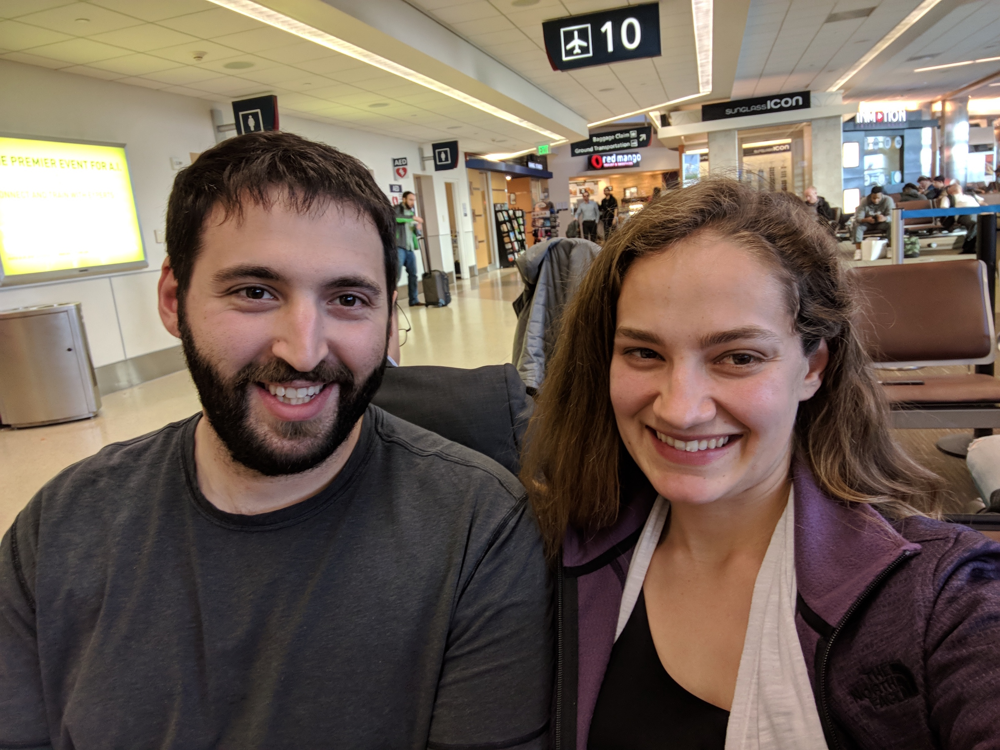

travelingmaterials
travelingmaterials
New Zealand Day 1
Sun 18 March 2018The Long Night

We entered San Jose's airport at around 4 pm on the afternoon of the 16th and left Queenstown's airport at around 1 pm on the afternnon of the 18th. So just getting here was a sizable adventure. We got to hang out at the lounge at San Jose's airport and enjoy the free-of-charge snacks and beverages, we got delayed on each flight in our sequence of flights and therefore experienced some fairly tense, tight layovers in between the flights, and we got high quantities (if not quality) of sleep.

We'd both had some pretty stressful weeks leading up to this vacation, so I think we started the flights feeling a little more tense than usual. But ultimately everything went totally fine and I really just want to show you some pictures that we took out the airplane window during landing. New Zealand is truly as beautiful as advertised. It's just stunning.

Here's Auckland
Queenstown in particular has this dramatic steep mountains, lush hills, and clear blue lake thing going for it that just looks painted on. It's nonsense beautiful.
 And here's Queenstown
And here's Queenstown
 And here's the view from our AirBNB. It's bonkers pretty.
And here's the view from our AirBNB. It's bonkers pretty.